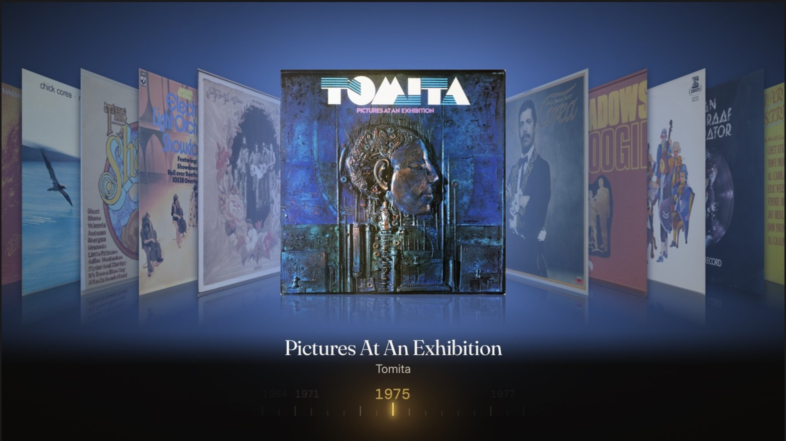

A vinyl collection app for Apple TV
Vinyl for Apple TV shows the vinyl records in your Discogs collection as cover art on your television.
Screenshots

CoverFlow gallery
The toolbar controls sit on the top bar: Suggest, sort, genre filter, layout and settings.
Sort, filter by genre or style, and Suggest picks a record at random. Every Vinyl-format release in your Discogs collection. CDs, cassettes and digital releases are not shown.

Grid view
Every cover in the collection, seven to a row, in a grid you scroll.

The record screen
The tracklist, the side slider and the credits for one record.
Sides: one side at a time, A, B, C and so on, as the release defines them. Credits: composer, writer, arranger, vocal and featured-artist credits.

Ambient halo
The cover sits centred and the room glows in its palette.
Swipe up on a record for the halo. It comes on by itself after a few seconds (3 seconds on a record, 60 seconds in CoverFlow); you can switch it to manual in Settings.
Your data
- Your records stay on your Apple TV.
- The app is read-only on Discogs.
- It has no analytics.
Cover images are looked up on MusicBrainz and the Cover Art Archive, using artist, album and catalogue number.
Before you install
- tvOS 18 or later.
- A free Discogs account with some Vinyl-format records.
- A phone with a camera to scan the sign-in code.
Always free.